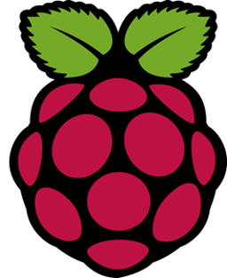

Making a Raspberry Pi bootable SD card from a root filesystem

I'm quite interested in building custom Linux installations for the Raspberry Pi, particularly for embedded applications. In this article I will demonstrate how to turn a root filesystem into a bootable Raspberry Pi SD card, on a Linux workstation. Note that I'm not explaining here how to create the Linux installation as a root filesystem -- I have a whole series of articles on rolling your own custom Linux for the Raspberry Pi. Here I'm assuming that you already have all the Linux software in place, in some kind of staging directory, and you want to make an image that can be burned onto an SD card (or distributed to other people who will make their own SD cards).
When automated, the process of creating a bootable SD image is reasonably fast (seconds). However, copying the image to the SD card -- particularly if you're using a USB card writer to do it -- can be slow. During the development process, it's often quicker to work on individual files, rather than creating and writing a new image for each change you test.
Overview of the Pi boot process
I'm only going to explain as much here as is needed to understand the rest of the article.
The Pi boots from the first partition of an SD card, which must be in FAT (MS-DOS) format. This partition contains the Pi firmware, which is proprietary, and a set of kernels, one for each supported ARM architecture. For true "bare-metal" programming of the Pi, you can just supply your own "kernel" implementation as one of the kernel files, and your installation is complete. For a regular Linux, the kernel files will be full Linux kernels, compiled with a set of drivers that is sufficient to continue the boot process.
The boot firmware loads and executes the Linux kernel, which by default
will mount the second partition of the SD card as its root filesystem.
This root partition will initially be mounted read-only, but
most Linux installations
change this to read-write at some point in the start-up process.
The root partition can have any filesystem that the kernel understands --
ext4 is typical.
When the root filesystem is mounted, the kernel will run the
executable /bin/init as process number 1. Everything
that happens after that is coordinated by this init process.
In mainstream Raspbian Linux, "init" is actually the systemd
process launcher. However, /bin/init can be anything --
making it a symbolic link to a shell will give you a workable,
single-user, console-only Linux system.
Note:
I'm aware that "Raspbian" is now called something else. However, "Raspbian" is the name that appears in much of the documentation, and in the URLs of software repositories, so I will continue to use it.
I'm assuming that you have a viable /bin/init,
and everything else that goes with it, in a staging directory for the
root filesystem.
The boot partition will generally be the same for all Pi Linux installations
-- it will contain the boot firmware and kernels. However, there are
subtle customizations that might need to be applied. The most common
of these is to provide one or both of the files cmdline.txt and
config.txt in the boot partition.
cmdline.txt contains the Linux kernel command line. You can
use this to specify certain options, like the location of the root filesystem
if it is not in the second partition. I sometimes use the
quiet option, so the kernel produces less diagnostic logging
on startup (which makes the boot a bit quicker).
config.txt contains a heap of configuration options related
to the Pi firmware. It's probably best to copy this file from a Raspbian
distribution, and edit it to suit your needs. In practice, the Pi
will boot with neither cmdline.txt nor config.txt,
because the defaults are sane. However, many applications do require some
tweaks in one or both these files.
Create the staging directories
I will store the files for the first disk partition -- the boot
firmware -- in /tmp/boot. The root filesystem, destined
for the second partition, is in /tmp/rootfs. There's
nothing special about these names or locations.
Unless you're compiling your own Linux kernel, your root filesystem
will need to contain the kernel modules that match the running kernel, in
directory /lib/modules. These modules can be found
in the same place as the boot firmware (see below),
but you'll need
to create the directory /lib/modules to copy them
into. So, in summary, you have:
/tmp
boot (empty at present)
rootfs
lib
modules
-- and the rest of the root filesystem
Get the firmware
Note:
As is conventional, I show commands that would normally be run as an unprivileged user prefixed with '$', and commands normally run asrootprefixed with '#'.
This step only needs to be carried out once or, at least, only
rarely. The firmware changes only very infrequently.
To fetch the latest firmware, and install
it in /tmp/boot:
$ cd /tmp
$ curl -o firmware.zip \
https://codeload.github.com/raspberrypi/firmware/zip/refs/heads/master
$ unzip firmware.zip # This creates /tmp/firmware_master
$ cp -aux /tmp/firmware_master/boot/* /tmp/boot
$ cp /path/to/cmdline.txt /tmp/boot # if needed
$ cp /path/to/config.txt /tmp/boot # if needed
Then, to copy the kernel modules into the root filesystem:
$ cp -aux /tmp/firmware-master/modules/* /tmp/rootfs/lib/modules
Finally, clean up the downloaded files.
$ rm -rf firmware_master firmware.zip
We should now have the boot firmware in /tmp/boot, and
the root filesystem -- including the kernel modules -- in
/tmp/rootfs.
Make the SD card image
We'll be creating an image that contains both boot and root partitions
in a single file, ready to copy to an SD card in a single operation.
You'll need first to decide how large the SD image needs to be, and
how it is to be partitioned.
Obviously the partitions need to be large enough to fit the entire contents of
/tmp/boot and /tmp/rootfs.
I'm assuming that a 2Gb SD card image will
suffice for both partitions, of which I will allocate 256Mb for the boot
partition, and the rest for the root filesystem.
Of course, this image will fit into a larger SD card if
one is available.
The process starts by creating an empty file of size 2Gb (or whatever total size you decided on):
# dd if=/dev/zero of=pi.img bs=128M count=16
I've named the file pi.img, but there's nothing special
about the name. Make the large file into a loopback block device:
# losetup -fP pi.img
Assuming that no other loopback devices are in use, the empty 2Gb
file is now the block device /dev/loop0. We need
to partition this device using fdisk, to provide a 256Mb
DOS-format boot partition, and a root partition that uses the rest of the
file. Here's a script to do that.
# fdisk /dev/loop << EOF o n p 1 +256m t c n p 2 w q EOF # sync
Note:
The blank lines in this script are significant -- they correspond to pressing "enter" to accept default values fromfdisk.
All being well, you should now have two additional block devices:
/dev/loop0p1 for the first (boot) partition of the disk
image and /dev/loop0p2 for the second (root filesystem)
partition.
Now we need to format these partitions:
# mkfs.vfat /dev/loop0p1 # mkfs.ext4 -F /dev/loop0p2
Now mount the first partitition (anywhere, but I'm using /tmp/mnt)
and copy the boot files onto it:
# mount -o loop /dev/loop0p1 /tmp/mnt # cp -r /tmp/boot/* /tmp/mnt/ # umount /dev/loop0p1
Now mount the root filesystem into the second partition and copy the files:
# mount -o loop /dev/loop0p2 /tmp/mnt
# cp -aux ${ROOTFS}/* /tmp/mnt/
I normally build my root filesystems as an unprivileged user, which
leaves the files owned by me, not root. It also means that I
can't set the suid and sgid permissions on files that need them
(and many executables typically do). This wasn't a problem for
the boot partition, because that will end up as a FAT partition, which
doesn't support owner or permission flags. It's critical to get these
attributes right on a Linux filesystem, however.
# chown -R root:root /tmp/mnt/ # chmod ug+s /tmp/mnt/usr/bin/sudo # chmod ug+s /tmp/mnt/bin/ping # chmod ug+s /tmp/mnt/usr/bin/passwd # chmod ug+s /tmp/mnt/bin/su # chmod ug+s /tmp/mnt/bin/login # ... and maybe others
Finally, clean up -- unmount and disconnect the loopback devices:
# umount /dev/loop0p2 # losetup -D
At this point, the file pi.img contains a bootable image,
ready to be distributed, or copied to an SD card.
Copy the image to an SD card
The method I've described above produces an SD card image that is in exactly the same format as regular Raspberry Pi Linux distributions, so the process for installing on an SD card is well-documented. On a Linux workstation, however, it's trivially easy:
# dd if=pi.img of=/dev/sdXXX bs=128M
/dev/sdXXX should be replaced by the real device that corresponds
to the SD card. Of course, care must be taken here, because the dd
command will blithely overwrite a filesystem full of data.
Closing remarks
The steps I described above are tedious, but they can easily be scripted. When scripted, the whole process takes about ten seconds on a typical Linux workstation. A disadvantage of the process I describe -- which applies to mainstream Pi Linux distributions as well -- is that the size of the root filesystem is set when the image is created. Copying the image onto an SD card with larger capacity doesn't get you a larger root filesystem at runtime. However, because this is such a common problem, solutions to it are well documented.